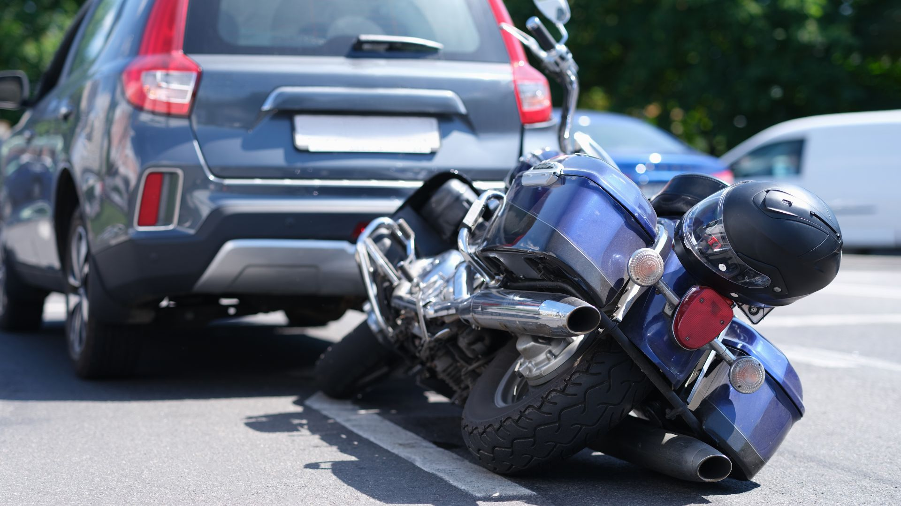

Call us today to schedule your free case evaluation and we’ll be in your corner, fighting for you! Whether you need a motorcycle accident attorney in Huntsville, Scottsboro, Fort Payne, Decatur, Athens, Madison, or elsewhere in Alabama, we can help!
Motorcycle Accidents
Motorcycle wrecks cause more serious injuries and need special handling. We know how to fight for injured riders.
Contact UsCall (256) 259-3929Lawyers in Huntsville, AL
If you have been injured in a motorcycle accident, you need the best attorney possible. All of the attorneys at The Lackey Law Firm have successfully handled many motorcycle injury cases and have the experience to get you the best outcome.

40+
Years representing injured victims throughout North Alabama
$70M+
Recovered for clients across hundreds of injury cases
$0
Fee unless we win — no upfront cost, no financial risk
Motorcycle Accident Attorneys in North Alabama
Motorcycle accidents are special and require special handling. The injuries are usually worse than car accidents, the medical bills are higher, and the rider is usually suffering much more. We know how to investigate these cases properly in order to obtain the best possible outcome.
The Lackey Law Firm is here to help alleviate some of the stress you may experience during the aftermath of a motorcycle accident.
Proven Advocacy for Complex Motorcycle Injury Claims in North Alabama
Why Experience Matters in Huntsville & Madison Motorcycle Accidents Motorcycle accidents are legally distinct from standard passenger vehicle claims, often involving more severe injuries and complex liability disputes. At The Lackey Law Firm, our family-owned team brings over 40 years of local experience to every claim. We understand the unique challenges riders face on high-traffic North Alabama routes like Memorial Parkway, I-565, and Highway 72.
Strategic Support for Injured Riders:
- Elite Legal Credentials: Lead attorney Justin Lackey is rated AV-Preeminent®, the highest peer-reviewed standard for legal skill and ethics.
- Independent Evidence Management: Our firm takes the administrative burden off your family by independently securing necessary evidence, including accident reports and medical documentation, to build a robust case for your recovery.
- Proven Financial Recovery: In 2025 alone, our legal team recovered more than $20 million for clients across Huntsville and Scottsboro, including major settlements for severe injuries and fractures.
Alabama Motorcycle Accident FAQ: Protecting Your Rights
Essential Questions After a Motorcycle Accident in Alabama
Who is liable for my motorcycle accident injuries?
In Alabama, liability is determined by negligence. Because Alabama follows strict contributory negligence laws, even a small percentage of fault can impact your ability to recover damages. Our attorneys provide the aggressive representation needed to hold negligent drivers accountable for failing to yield or distracted driving.
What damages can I recover after a motorcycle wreck?
Depending on the specific details of your case, you may be eligible to recover compensatory damages for medical bills, lost income, and pain and suffering. In Alabama, compensatory damages are intended to pay for all injuries that follow an accident, including both economic and non-economic losses.
How does Alabama law handle wrongful death in motorcycle accidents?
For families who have lost a loved one, we provide specialized guidance under the Alabama Wrongful Death Act. Notably, Alabama law only allows for the recovery of punitive damages in wrongful death cases, which are intended to punish the wrongdoer rather than compensate the survivors for financial loss.
What is the time limit for filing a motorcycle accident claim?
Most personal injury and wrongful death actions in Alabama must be commenced within two years from the date of the injury or death. Failing to file within this period typically results in the permanent loss of your right to seek legal recourse.